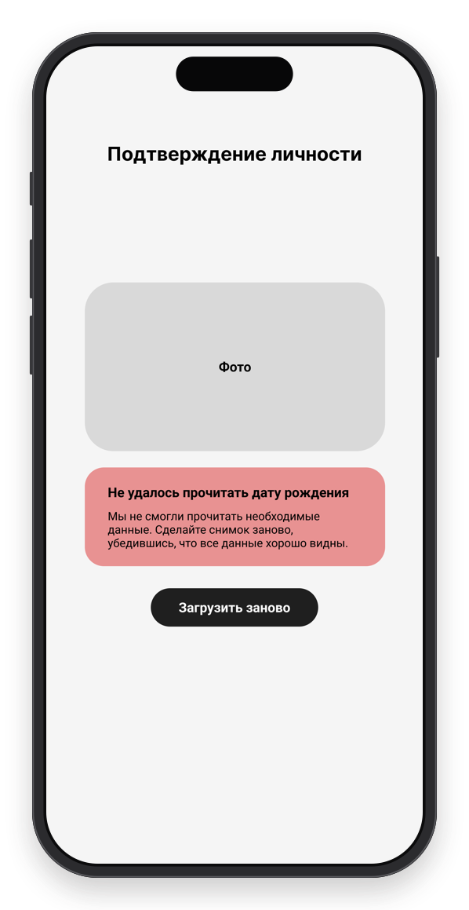
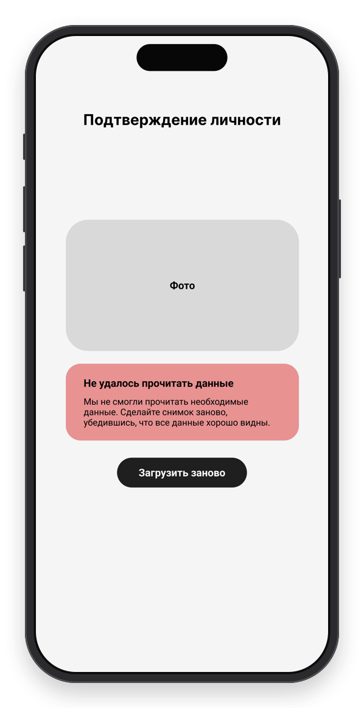

ошибка
Не удалось подтвердить личность
Человек уже потратил время на снимок, поэтому ошибка говорит, что именно не получилось прочитать. Если система этого не знает, остаётся общий вариант с тем же следующим шагом.
Не удалось прочитать дату рождения
Мы не смогли прочитать необходимые данные. Сделайте снимок заново, убедившись, что все данные хорошо видны.
Загрузить заново

